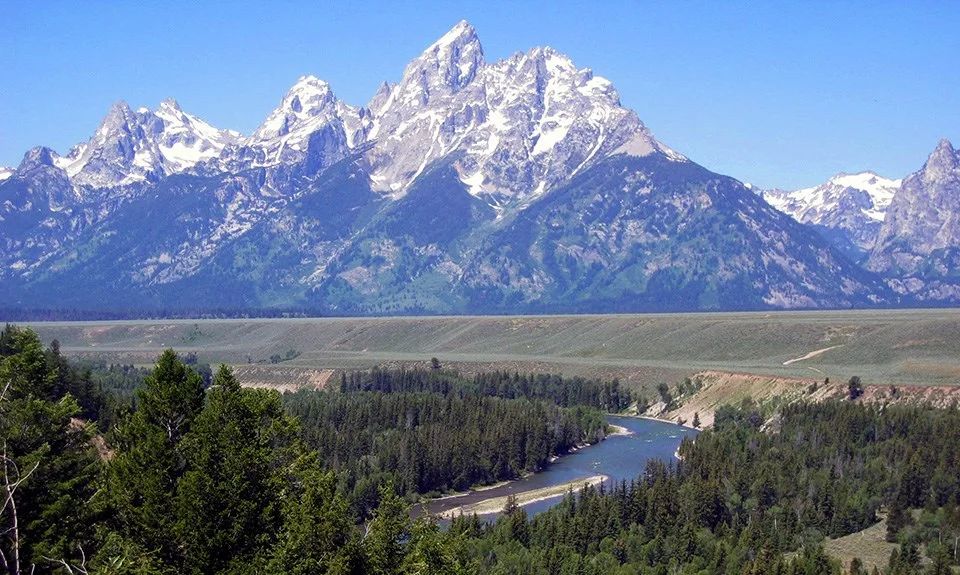

<!doctype html>
<html lang="en">
<meta charset="utf-8">
<meta name="viewport" content="width=1200,initial-scale=1">
<title>Teton County Trailhead social card — 1200 × 630</title>
<style>
@font-face{font-family:'Young Serif';src:url('../public/assets/fonts/trailhead-v1/young-serif-normal.woff2')}
@font-face{font-family:Mulish;src:url('../public/assets/fonts/trailhead-v1/mulish-normal.woff2');font-weight:400 800}
@font-face{font-family:Caveat;src:url('../public/assets/fonts/trailhead-v1/caveat-normal.woff2');font-weight:500 700}
*{box-sizing:border-box}body{margin:0;width:1200px;height:630px;background:#233d2c;color:#efe6d2;overflow:hidden;font-family:Mulish,Arial,sans-serif}
.card{position:relative;width:1200px;height:630px;padding:44px 48px;display:grid;grid-template-columns:632px 1fr;gap:30px;background-image:url("data:image/svg+xml,%3Csvg xmlns='http://www.w3.org/2000/svg' width='600' height='600'%3E%3Cg fill='none' stroke='%23efe6d2' opacity='.12'%3E%3Cpath d='M-50 120c120-60 220 40 340-10s200-90 360-30M-50 170c120-60 220 40 340-10s200-90 360-30M-50 220c120-60 220 40 340-10s200-90 360-30M-50 290c120-60 220 40 340-10s200-90 360-30M-50 350c120-60 220 40 340-10s200-90 360-30M-50 420c120-60 220 40 340-10s200-90 360-30M-50 500c120-60 220 40 340-10s200-90 360-30M-50 560c120-60 220 40 340-10s200-90 360-30'/%3E%3C/g%3E%3C/svg%3E")}
.copy{display:flex;flex-direction:column;align-items:flex-start}.brand{display:flex;align-items:center;gap:12px;font:400 25px 'Young Serif';margin-bottom:36px}.brand svg{width:38px;height:38px;stroke:#efa77e;fill:none;stroke-width:1.8;stroke-linecap:round;stroke-linejoin:round}.kicker{display:flex;align-items:center;gap:12px;font-size:11px;letter-spacing:2.8px;text-transform:uppercase;font-weight:800;color:#efa77e}.kicker:before{content:'';width:45px;border-top:2px dashed #b4552d}
h1{font:400 91px/.98 'Young Serif';letter-spacing:-2px;margin:22px 0 24px}h1 em{font-style:normal;color:#efa77e;position:relative}h1 em svg{position:absolute;left:0;bottom:-8px;width:100%;height:18px;fill:none;stroke:#efe6d2;stroke-width:3;stroke-linecap:round}.description{font-size:19px;line-height:1.6;max-width:560px;margin:12px 0 0;color:#ded9c7}.footer{margin-top:auto;border-top:2px dashed #efe6d240;width:100%;padding-top:18px;display:flex;justify-content:space-between;align-items:center;font-size:11px;font-weight:800;letter-spacing:1.5px}.domain{font-size:15px;letter-spacing:0}
.photo-wrap{position:relative;margin-top:12px;margin-bottom:4px}.photo-wrap:before{content:'';position:absolute;inset:-10px;border:2px dashed #efe6d260;border-radius:18px;transform:rotate(2deg)}.photo{height:100%;border-radius:12px;overflow:hidden;transform:rotate(-1.5deg);box-shadow:0 20px 40px #0006}.photo img{width:100%;height:100%;object-fit:cover;object-position:50% center;filter:saturate(.9) contrast(1.05)}.sticker{position:absolute;top:-16px;left:-22px;transform:rotate(-6deg);background:#efe6d2;color:#233d2c;font:700 22px Caveat;padding:9px 14px;box-shadow:0 6px 20px #0004}.stamp{position:absolute;right:-18px;bottom:22px;background:#b4552d;width:116px;height:116px;border-radius:50%;display:grid;place-content:center;text-align:center;font-size:10px;font-weight:800;line-height:1.5;letter-spacing:1.5px;transform:rotate(8deg);box-shadow:0 8px 20px #0004}.stamp b{font:400 34px 'Young Serif';letter-spacing:0}
</style>
<main class="card">
  <section class="copy">
    <div class="brand"><svg viewBox="0 0 24 24" aria-hidden="true"><path d="m2 19 7-13 4 7 3-5 6 11H2Z"/><path d="m6 11 3 2 3-2"/></svg>Teton County</div>
    <div class="kicker">Your Idaho field guide</div>
    <h1>Go find<br>your <em>valley<svg viewBox="0 0 300 24"><path d="M4 16c60-14 120 10 180-4s80-6 112 2"/></svg></em>.</h1>
    <p class="description">Local favorites. Wide-open trails.<br>Four seasons of getting out there.</p>
    <div class="footer"><span>VICTOR &amp; DRIGGS, IDAHO</span><span class="domain">tetoncounty.us ↗</span></div>
  </section>
  <div class="photo-wrap"><div class="photo"></div><span class="sticker">The quiet side of the Tetons ↘</span><span class="stamp">ONE VALLEY<b>4</b>GOOD SEASONS</span></div>
</main>
</html>
